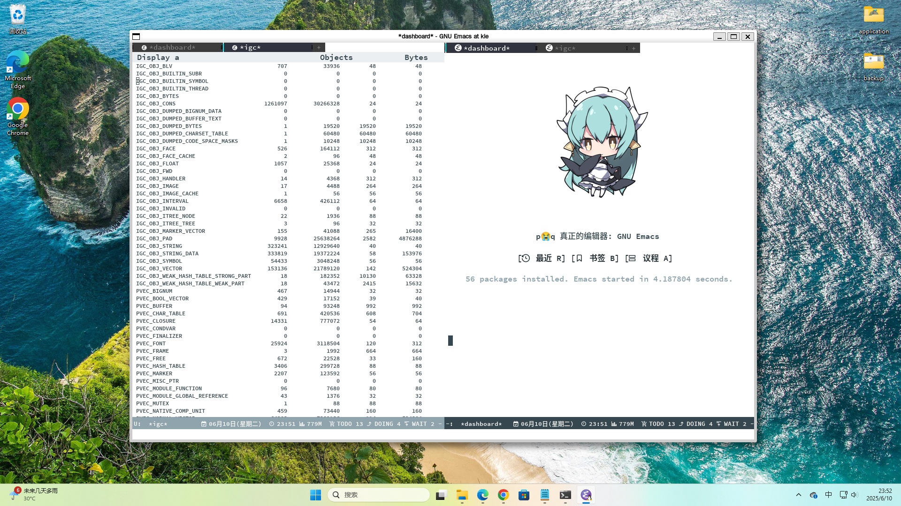

Table of Contents
1. 【猎奇行为】在Windows11-WSL上使用emacs-feature-igc-31050-包括libmps包括libgccjit
1.1. 无图言雕是吧

1.2. 原因
为什么要这么猎奇，非得要在Windows11上运行emacs-feature-igc？
[简单来说] + 破烂笔记本，不值得折腾 + 为了Emacs而使用Linux + 打游戏 + 心累了 [详细来说] + 破烂笔记本，不值得折腾 因为我自己的笔记本过于垃圾，即使我买来一些外设来弥补相差的体验，但它那台破烂笔记本仍然就是那个破烂样。 我可以保证说，在同样的外部环境下，安装同样的系统，我的笔记本报出的错误，绝对比任何人的设备都要多。 毕竟使用这台笔记本，会因为网卡是螃蟹最次的那种网卡，而导致网速慢(而且是非常慢！最高速度只有20Mbps！)安装不上一些包 从而导致一路上都要手动签名*( ￣皿￣)/#，甚至即使安装好后，平常滚动时都时不时来一下下载速度过于缓慢的断流问题，简直气死个人 你能想象到，有什么会因为网卡过于垃圾，导致有些包装不上，导致了很莫名其妙的错误吗？（别人都没有我这么倒霉过！） 再加上，我实在是受不了那破烂笔记本的硬件了，我回顾了一下 我居然使用了一台8G(板载4G+插拔4G)内存、45%ntsc屏幕色域、键盘的capslock、tab、escape、f2全部失灵 电池寿命只有38%且容量只有2340mA的笔记本，长达一年的Emacs使用时间吗？ 我甚至因为tab键坏了，至今都还保持者在bash里面 ~C-i~ 来补全的行为 我甚至因为那两个usb 2.0接口经常松动，导致我如果要插u盘进去都是要看运气的，甚至今天2025年5月2日才发现，原来过去我保存到u盘里的文件 从2024年10月5日之后，就全部都是压缩失效的了。也就是说.....我2024年10月5日在linux上的数据，统统都看不了了....... 我甚至还因为f2键坏了，导致我bios/uefi firmware都甚至按不进去（您觉得因为键盘坏了主板设置都BYD进不去的笔记本能有多逆天？） 我想，应该没有人比我使用的个人设备(单片机另说哈!)还要差的了！我超，想想当时还是被电脑城奸商6199元买来的。 当时我想着，虽然这台笔记本硬件各方面过于垃圾，但它的剪刀脚键盘手感很好，于是就继续忍着使用了。 但我现在有Microsoft Designer Compact Keyboard，甚至还有两把，要比这破烂笔记本更爽，做工更好，价格还便宜软软代购只要159元 那破烂笔记本赶紧扔了得了，我甚至断言一下，正是这台破烂笔记本，让我个人浪费了很多时间在无意义的事情上 + 为了Emacs而使用Linux 对于我个人来说，我对Linux的态度，仅仅只是Emacs启动器。 但Linux发行版也是有好坏之分的哈，好的Linux安装软件特别方便，而且资料也是公开的，甚至不会的话还可以找热心群友帮忙 坏的Linux的话就会讨论很多非Linux的话题，然后资料也是不公开的或者说不允许外人编辑这样，同时安装软件包的包名让人非常难以理解等等 + 打游戏同时心累了 再加上我实在不想，每几天打开那台屏幕垃圾得很的笔记本，然后每隔几天就要pacman -Syu一下 我实在是不想滚了，我本来想找到一个不可变的arch的或类似的，但除了manjaro那个即将释出的，就实在找不到了。 我也想过，要不要上可以一劳永逸的声明式系统nixos或guix 可是nixos的nix强是强但不够爽，没有guix os的scm那样从头爽到尾的感觉。 可是guix的sju的镜像，很抽象很抽象，以至于在我自己的网络环境下面，是不！可！能！成功安装上的。（尝试过很多遍了） 最后，我就是想找一个all in one的 即既可以打游戏比如星露谷欧卡三角洲赛车游戏等等，又可以时不时看一下我个人的【打开linux就仅仅是为了emacs】的个人要求 所以，最后因为就是要打游戏（同时我也只剩下台式机这个机器了），所以那么必须要 Windows 了。所以才出来个这么猎奇的想法 ~^_^~
1.3. 方案
我超，我可以说这是我研究过最通透的几个方案了。我得一一说明一下，Windows是有它自己的潜力在的。
通过下面的描述，甚至可以打破您对Windows印象差的刻板印象
| 序号 | 方案 | 适用系统 |
|---|---|---|
| 1 | WSLg(强烈推荐) | Win11(只适用于Win11！因为WSLg是Win11独占) |
| 2 | MSYS2 | Win10(Win10用户的选择), Win11(Win11有更接近Linux原生的WSL+WSLg) |
| 2 | WSL + X Server | Win10(Win10用户的选择), Win11(Win11有更接近Linux原生的WSL+WSLg) |
| 3 | GNU FTP main server | （BYD什么时候出的Emacs 30.1在Windows上？我记得我的印象只有Emacs 28.1，所以嫌麻烦的话这也是一个很不错的选择） |
| 4 | 原生Linux环境或虚拟机 | 你喜欢就好 |
1.3.1. 方案1 - WSLg(Win11用户的选择，强烈推荐！！)
要做比较多的前提知识的准备，但是如果您是Emacs老登的话，那相信这些对您来说不过就是小儿科哈！ <(￣︶￣)↗[GO!]
啊，您是好奇为什么是 强烈推荐 吗？
因为这个原因
checking for libgccjit.h... yes checking for mps.h... yes
这就是答案
我选择安装的linux发行版，是 Windows Subsystem for Linux - archlinux 2.4.13
内核版本是 Linux 5.15.167.4-microsoft-standard-WSL2
其实也就是 wsl -l -o 下的 archlinux
- wsl安装archlinux
# powershell管理员身份打开，输入完 "wsl" 加上 "--install"，然后重启 wsl --install # 然后重启就安装上了wsl本体，然后是安装对应的发行版 # 重启之后，会自动默认安装ubuntu，这里手快一点点取消快点，同时开始菜单卸载就是了 # 查看可用的发行版 wsl -o -l # 即 wsl --online --list # 安装wsl-archlinux发行版，很快就安装好了 # 但注意，此wsl-archlinux非彼archlinux # 在archlinux社区中求助需要特别注明自己的系统为: wsl的archlinux，而非原生的archlinux wsl --install -d archlinux # 安装好之后，在 "wsl settings" 里面，需要将网络通信从NAT改成Mirrored，这样才能使用本地代理 # 不然就会用默认配置，去连接geo与rack镜像，很卡的，非常卡！因为没有配置上本地代理 # 甚至这个提示在windows10下都没有的，所以才说WSL2的方法几乎只适用于windows11 []~(￣▽￣)~*
- wsl配置archlinux
# 设置本地语言 # #en_US.UTF-8 UTF-8 改成 en_US.UTF-8 UTF-8 # #zh_CN.UTF-8 UTF-8 改成 zh_CN.UTF-8 UTF-8 # #zh_TW.UTF-8 UTF-8 改成 zh_TW.UTF-8 UTF-8 # #zh_HK.UTF-8 UTF-8 改成 zh_HK.UTF-8 UTF-8 vim /etc/locale.gen # 生成语言项 locale-gen # 设置系统环境语言 # 添加 LANG=zh_CN.UTF-8（因为已经装好了，已经不在tty下了，所以直接设置中文汉语） vim /etc/locale.conf # 安装中文字体，来让应用可以支持显示中文 pacman -S wqy-microhei wqy-microhei-lite wqy-bitmapfont wqy-zenhei ttf-arphic-ukai ttf-arphic-uming adobe-source-han-sans-cn-fonts noto-fonts-cjk # 安装emoji表情，就比如fcitx按;然后出现的那些emoji表情那样 # 原生archlinux是已经装fcitx时已经装好的了，WSL没有装，所以要手动安装 pacman -S noto-fonts-emoji # 使用WSLg，从而使得让Linux的GUI应用，可以rdp到Windows界面上 # 他WSLg说的默认支持，是因为他是默认支持在ubuntu上，你看他WSLg的宣传界面都是ubuntu的皇冠界面，可我这是archlinux啊，所以就需要一些设置 # 我也是询问AI后，几乎绝望之后才知道的 # 总结起来的意思是，让Weston(一个Wayland窗口管理器跑在X11上，或让Wayland协议跑XWayland应用) # 安装 pacman -S xdg-desktop-portal-wlr pipewire wireplumber weston dbus # 运行，目的其实是Wayland协议跑XWayland应用。 weston --backend=headless-backend.so & # 然后运行这一次就可以了 # 再者，一些Windows应用，比如软软输入法，在通过WSLg显示在Windows界面的GUI版Linux应用，是不能运行的。但TUI版Linux应用就可以 # 说人话，就是终端应用可以用Windows软软输入法，GUI应用不可以用Windows软软输入法。 # 所以如果想在GUI版的Emacs上，能打出中文，同时还可以自由选择输入方案比如双拼五笔声形码这些，就需要下面的安装来安装 emacs-rime 了。下面的链接就是，但fcitx5这里只需要安装 pacman -S fcitx5 fcitx5-rime 就足够了 # https://colfwe.github.io/docs/%E8%AE%B0%E5%BD%95%E4%B8%80%E6%AC%A1%E5%AE%89%E8%A3%85%E7%8B%97%E5%93%A5%E7%9A%84emacs-rime%E8%BE%93%E5%85%A5%E6%B3%95%E8%BF%87%E7%A8%8B%E8%AE%B0%E5%BD%95.html # 注意fcitx5这里只安装 pacman -S fcitx5 fcitx5-rime
- wsl编译emacs-feature-igc
在编译之前，需要安装一些依赖，依赖管理让wsl-archlinux来操作就行，这里属于是“命中关键词”来安装。
pacman -S giflib libxpm gtk2 gtk3 libgccjit autoconf make texinfo gnutls pkg-config imagemagick libpng libjpeg texlive mpv
序号 包依赖 为了Emacs而使用Linux 1 giflib 在Emacs处理gif的库 2 libxpm 在X11下操作位图的库 3 gtk2 一会开编译命令 –with-x-toolkit=gtk3 用的 4 gtk3 一会开编译命令 –with-x-toolkit=gtk3 用的 5 libgccjit 开 native-comp 用的，而且是非常重要 6 autoconf 能够运行emacs源码包的 ./autogen.sh 用的 7 make 构建工具 8 texinfo 在make构建过程时解析文本用的 9 gnutls 一个tls的gnu工具包，必须要安装，不然不能安全下载从elpa源获取的包 10 pkg-config gnutls的依赖，装上pkg-config才能让编译emacs时检测到有gnutls，参考 红迪 11 imagemagick 在Emacs下处理一些图像用的 12 libpng 在Emacs下处理一些png图像用的 13 libjpeg 在Emacs下处理一些jpeg图像用的 14 texlive 可选项: 如果要写auctex写LaTeX的话 15 mpv 可选项: 如果要用emms听音乐的话 然后就是下载 libmps 的库文件，安装方法就是直接暴力复制到
/usr/bin/ 与 /usr/include上就行了，libmps的安装参考这里 在Linux上编译emacs-feature-igc分支的个人方法然后就是编译命令，先
chmod +x ./autogen.sh再运行./autogen.sh就得到了./configure然后要设置几个构建脚本为可执行，反正这在msys2上是要这么操作的，这里也设置为可执行就是了
chmod +x ./build-aux/move-if-change chmod +x ./admin/charsets/mapconv chmod +x ./build-aux/update-subdirs chmod +x ./build-aux/make-info-dir
然后我的编译选项，就比 在Linux上编译emacs-feature-igc分支的个人方法 多出了
--with-x-toolkit=gtk3 --with-gnutls=ifavailable这两个选项CFLAGS="-fmax-errors=1000" ./configure --sysconfdir=/etc --prefix=/usr --libexecdir=/usr/lib --with-tree-sitter=ifavailable --localstatedir=/var --disable-build-details --with-harfbuzz --with-libsystemd --with-modules --with-x-toolkit=gtk3 --with-mps=yes --with-gnutls=ifavailable 'CFLAGS=-march=x86-64 -mtune=generic -O2 -pipe -fno-plt -fexceptions -Wp,-D_FORTIFY_SOURCE=3 -Wformat -Werror=format-security -fstack-clash-protection -fcf-protection -fno-omit-frame-pointer -mno-omit-leaf-frame-pointer -g -ffile-prefix-map=/build/emacs/src=/usr/src/debug/emacs -flto=auto' 'LDFLAGS=-Wl,-O1 -Wl,--sort-common -Wl,--as-needed -Wl,-z,relro -Wl,-z,now -Wl,-z,pack-relative-relocs -flto=auto'
然后
make编译，然后make install安装。然后检测两个地方检查native-comp
;; 如果C-x C-e运行后，Message回显区，显示了 "t"，那就说明开启了native-comp本地编译 (native-comp-available-p)
检查igc
# 打开Emacs，然后 M(alt)-x 执行 igc-stats，按 wasd 的 s # 如果能看到 IGC_OBJ_BLV 1382 66336 48 48 IGC_OBJ_BUILTIN_SUBR 0 0 0 0 IGC_OBJ_BUILTIN_SYMBOL 0 0 0 0 IGC_OBJ_BUILTIN_THREAD 0 0 0 0 IGC_OBJ_BYTES 0 0 0 0 IGC_OBJ_CONS 2618570 62845680 24 24 # 就说明igc生效了
这样就安装好了，这是方案1 - WSLg
1.3.2. 方案2 - MSYS2(Win10用户的选择)
这里下载 msys2.org 软软的msys2，然后相比与WSL来说 MSYS2更多偏向 Windows完全操纵Linux 然而 WSL更多偏向Linux操纵Windows
所以对于Windows的Win10用户，在使用emacs-feature-igc上，还是推荐升级Win11来使用 <(￣︶￣)>
(当然也可以直接原生Linux环境使用，但那样对于我个人来说，就玩不了游戏了，比如一些需要反作弊验证的游戏那真的没办法玩，呃，比如三角洲行动？ (。・^・)ノ)
然后下载 MSYS2 他自己维护的包名 因为这个环境是 MSYS2，所以一些资料是很不好找的！反正就是没有Linux(这里特指archlinux)那样好找就是了 []~(￣▽￣)~*
# MSYS2也是用的pacman包管理器噢，用法全部一样的(～￣▽￣)～ pacman -S mingw-w64-ucrt-x86_64-gcc
然后如果要编译出Emacs31的话，必须！必须！要使用 /ucrt64 (universe C runtime) 运行环境，而非 /usr 环境，所以如果说这里出现了什么差错的话，资料是很难找的。况且这还是 MSYS2 的 Windows abi。
然后我自己也尝试过msys2在win10上的方法，用 ucrt64 编译 emacs-master 可以是可以，但！是！他不支持编译 emacs-feature-igc，即使我已经将 libmps 文件都放在了 /ucrt64 或 /usr 下，它都不支持编译出来！
它一定会显示 "The libmps library is Missing"，那就没有办法成功编译出 emacs-feature-igc ( ´_ゝ` )
哦，你说会有什么缺点啊，那就是master的运行速度会慢很多，对于我个人的配置来说，大概慢个两到三倍的这个样子，相比igc的话
还有就是msys2它因为是Windows abi，所以很多内容都是msys2项目维护的，比如各种包名就需要看msys2的文档，比如我想找一个让Emacs开启native-comp的包libgccjit，那么在上面的名称我忘记是什么了，反正好像不叫这个名称。就会多很多负担吧，不好找资料这样。
所以对于Windows的Win10用户，在使用emacs-feature-igc上，还是推荐升级Win11来使用 <(￣︶￣)> (毕竟如果WSLg出现了什么问题，还可以甩锅不是嘛 o(≧▽≦)o )
1.3.3. 方案2 - WSL + X Server(Win10用户的选择)
Win10用户也可以尝试，但不太推荐，这个属于能跑就行的水平，一些性能不够WSLg那样直接，不过更重点的地方，在于如果X Server第三方应用出现了点什么bug，就不太好甩锅。
所以对于Win10用户来说，要使用emacs-feature-igc，最好的方法是升级Win11，其次才是MSYS2 (声明: 仅在要使用Emacs的需求上是这样，其他方面我不知道我不懂)
1.3.4. 方案3 - GNU FTP main Server
可以到 https://ftp.gnu.org/gnu/emacs/windows/ 这里下载（请支持 GNU/FSF 喵）
我的记忆是，当时Windows的Emacs是不维护的了，然后最新版本停在 Emacs 28.1，这就使得很多地方都很难操作。
在 Emacs 28.1 上，比如 package.el、dirvish.el 等，都是不支持的。前者还好，可以用 require + 手动下载代替，后者是真的略微难顶
因为 dirvish 在 dired-mode 下的文件树侧边栏操作很重要，没有这个对于我自己来说，我都不知道该如何高效处理文件了
还有就是，Windows版的原生Emacs 28.1，它是因为没有 libgccjit 所以导致默认不支持 native-comp 的
于是就会在各种使用过程中，看到因为缺少了 libgccjit 的 native-comp，导致各种奇奇怪怪的错误出现。
现在Windows版的Emacs升级到了 30.1，那看来应该挺不错的，嫌麻烦的话，其实这也是一个很不错的选择。
1.4. 转发fc教授的一句话
回到wsl，我觉得有两种可能: 1. 微软内部员工也厌倦了 Windows 作为开发平台不好用的事实，同时微软的合作伙伴们也希望微软平台能有兼容 Linux 用户空间程序的方案。来自 macos 抢占开发者平台市场估有率的压力也很大，以及 Windows Mobile 计划失败之后对 wsa 的需求，所以微软需要 wsl。 2. 微软一贯的 *Embrace, extend, and extinguish* 要毁灭一个东西第一步是兼容它，抢了一部分占有率之后引入微软特有的不兼容，然后抢过来。到底是 1 还是 2，或者是两者同时，我看不清。目前微软的 2 的 extent 还仅限于 wslg 那个图形驱动栈方面的动作，值得警惕但是还没到不兼容的地步。
1.5. 个人暴论时刻
1.5.1. 【个人暴论】WSL+WSLg只适合GUI应用，不太适合TUI应用
因为在我个人的操作过程中，我在一个 git 仓库下，执行 git log 会出现这样的 错误提示
error: cannot run less: No such file or directory fatal: unable to execute pager 'less'
然而，如果我使用 magit 的话，一切正常，而且正常无比。速度响应之快完全就像在 Linux 环境下运行一样，完全就不是在 Windows 下运行的
暴论：怀疑软软内部也有用Emacs的自己人，不然不可能怎么就在【默认情况的WSL】下只有magit能用，然而git不能用的 ~∑(￣口￣||~ 要么就只有是magit提前预料到开发好了 ~(～￣▽￣)～~
1.5.2. 【个人暴论】你说我什么时候会回到linux啊？
可能等我什么时候有钱买台高配笔记本，且不心疼钱财的时候，那个时候可能会回归，不过现在来看，那恐怕是一段很漫长的时间了，因为现在这个更好用，玩玩Emacs的同时还能打游戏 <(￣︶￣)>